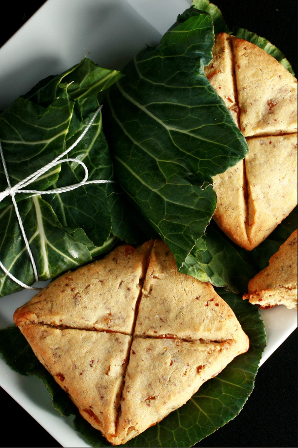
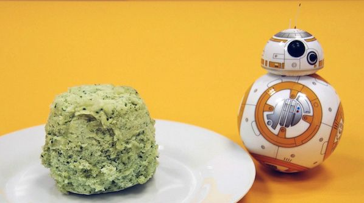
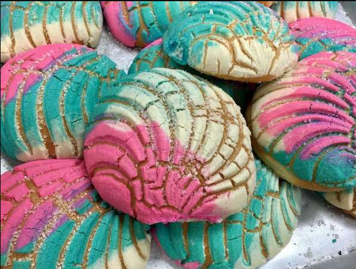

Mystical Breads

Lembas Bread
"One small bite is enough to fill the stomach of a grown man."
-Legolas-

Polystarch Portion Bread
"Known to the locals as 'portion bread,' it's really just a simple mix of polystarch flour and some water. The chemical reaction from the combination of the two creates a self-risin' miniature loaf that would satisfy even the pickiest scavenger."
―Strono Tuggs, The Official Black Spire Outpost Cookbook
―Strono Tuggs, The Official Black Spire Outpost Cookbook

Unicorn Sweet Bread
It's sweet and unique I guess. Tons of sugar. Probably gonna rot your teeth out.